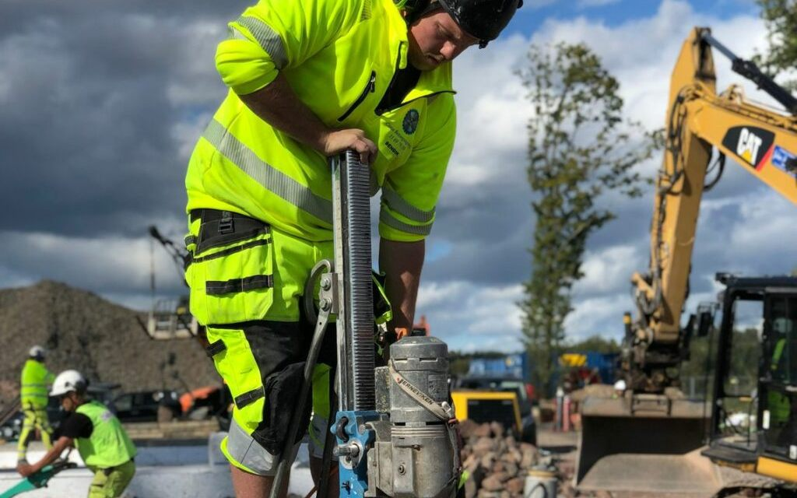

Catos Betongsaging AS tar på oss alt fra riving av broer over jernbane til presisjonsarbeid med saging av mur og betong for trygg demontering. Vi sager også ut åpninger for dører, vinduer, porter og større åpninger i vegger og dekker, både i bærende og ikke-bærende konstruksjoner, inkludert konstruktiv riving der det kreves.
Med over 34 års erfaring, kurs og nødvendige godkjenninger har vi høy kompetanse innen miljøsanering og riving, og vi håndterer og leverer spesialavfall som asbest etter regelverket.
Dette gjør vi
- Innvendig rensk og totalriving
- Konstruktiv riving i bærende konstruksjoner
- Utsaging av dører, vinduer og porter
- Miljøsanering og spesialavfall
- Riving av bro og større anlegg
Dette trenger vi fra deg
Beskriv jobben kort: hva som skal gjøres, omtrentlig størrelse, adresse og når det skal utføres. Har du bilder eller tegninger, tar vi dem gjerne imot. Er bygget fra før 1985, avklarer vi om det kan være asbest før arbeidet starter.
Hvor vi jobber
Vi holder til i Holmestrand og tar oppdrag i Holmestrand, Tønsberg, Horten, Sandefjord og Larvik – og Oslo, Bærum, Asker, Drammen og Kongsberg.
Mer
Andre tjenester
Jobbene henger ofte sammen. Vi tar gjerne flere fag i samme oppdrag.
Neste steg
Skal vi se på riving og miljøsanering?
Ring, eller send en kort beskrivelse. Vi avklarer omfang og gir et uforpliktende tilbud.
Be om tilbud eller ring 90 05 02 81 i åpningstiden